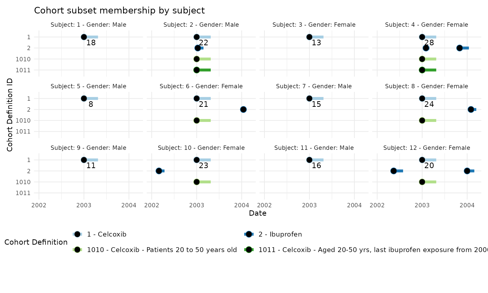

Creating Cohort Subset Definitions
James P. Gilbert, Freddy Avila Cruz and Anthony G. Sena
2025-07-31
Source:vignettes/CreatingCohortSubsetDefinitions.Rmd
CreatingCohortSubsetDefinitions.RmdIntroduction
This guide describes the process for creating cohort subsets using
CohortGenerator. OHDSI defines a cohort as a set of
persons who satisfy one or more criteria for a duration of time and
the aim with cohort subsets is to apply additional criteria to cohorts
to define more specific subgroups for use in various analyses. This is
done by defining a subset definition that includes one
or more subset operators to apply to cohorts that are a
part of your cohort definition set.
Subset Operators
Cohort generator contains three types of subset operators that are described below.
Demographic subset operator
The demographic subset operator allows you to subset a cohort by age, gender, race or ethnicity.
Limit subset operator
The limit subset operator is designed to subset a cohort to limit based on some time or ordinal criteria. For example, we might want to consider the first event for a person in a cohort. We can use the limit subset operator to limit a cohort based on prior observation time, cohort duration or even a calendar start/end date.
Cohort subset operator
This type of operation allows you to subset a cohort to subjects included in one or more other cohorts. As an example, we might be interested in new users of metformin who have the indication of Type 2 diabetes. We can define this population using 2 cohorts: 1) new users of metformin and 2) Type 2 diabetes patients. We can then use these 2 cohorts to define our target population where we describe “new users of metformin who’s start date overlaps within a Type 2 diabetes episode.” In this way, cohorts become reusable building blocks to create new populations using existing cohort definitions.
Creating cohort subset definitions
This section will provide an overview and some examples of how to define a subset definition using the various operators.
Cohort Definition Set
We will start by loading a cohort definition set with two cohorts for this example:
jsonFilePath <- system.file("testdata", "CohortsToSubset.JSON", package = "CohortGenerator")
cohortDefinitionSet <- jsonlite::fromJSON(jsonFilePath)
cohortDefinitionSet <- cohortDefinitionSet |>
dplyr::filter(cohortId %in% c(1, 2))
cohortDefinitionSet |>
dplyr::select("cohortId", "cohortName") |>
knitr::kable()| cohortId | cohortName |
|---|---|
| 1 | Celcoxib |
| 2 | Ibuprofen |
We will use these two cohorts in the subsequent examples.
Subset operators
In this section we will show you can create and use the various subset operators to create different subset definitions using the two cohorts in our example cohort definition set.
Demographic Subset Operator
Here is an example of a demographic subset operator called
ageCriteria that identifies cohort subjects between the
ages 20 - 50 years old.
ageCriteria <- CohortGenerator::createDemographicSubset(
ageMin = 20,
ageMax = 50
)Limit Subset Operator
This is an example of how we can create a limit subset operator
called limitToLastEver to identify the last cohort event
that happens between 1 January 2000 and 31 December 2008.
limitToLastEver <- CohortGenerator::createLimitSubset(
name = "Last event during 1 January 2000 and 31 December 2008",
priorTime = 0,
followUpTime = 0,
limitTo = "lastEver",
calendarStartDate = as.Date("2000-01-01"),
calendarEndDate = as.Date("2008-12-31")
)Cohort Subset Operator
The following example shows how we can identify patients that have an ibuprofen event that starts during the target cohort start and end date:
ibuprofenSubset <- CohortGenerator::createCohortSubset(
name = "ibuprofen exposure",
cohortIds = 2, # Ibuprofen cohort
cohortCombinationOperator = "any", # Look for any Ibuprofen exposure
negate = FALSE, # We want to include (not exclude) participants exposed to Ibuprofen,
windows = list(
CohortGenerator::createSubsetCohortWindow(
startDay = 0,
endDay = 9999,
targetAnchor = "cohortStart",
subsetAnchor = "cohortStart"
),
CohortGenerator::createSubsetCohortWindow(
startDay = -9999,
endDay = 0,
targetAnchor = "cohortEnd",
subsetAnchor = "cohortStart"
)
)
)In this subset, we use cohortId = 2 to identify all
the subjects exposed to ibuprofen. The combinationOperation =
all, states that persons must exist in all of the
cohortIds. We define the windows to evaluate
the start/end date of the subset cohort (ibuprofen) relative to the
start/end date of the target cohort. The windows is defined
as:
The subset cohort start date is on or after the target cohort start date
AND
the subset cohort start date must end on or before the target cohort end date
Create the subset definition
Now we can use one or more of the subset operators in a subset definition. Here is how to create a subset definition for patients aged between 20 to 50:
ageRequirementSubset <- CohortGenerator::createCohortSubsetDefinition(
name = "Patients 20 to 50 years old ",
definitionId = 10,
subsetOperators = list(
ageCriteria
),
subsetCohortNameTemplate = "@baseCohortName - @subsetDefinitionName"
)We can combine multiple subset operators in a single subset definition. Here is how to create subset for patients aged 20-50 that are exposed to ibuprofen at the start of the cohort and to extract the last event from 1 January 2000 and 31 December 2008:
ibuprofenWCelcoxib <- CohortGenerator::createCohortSubsetDefinition(
name = "Aged 20-50 yrs, last ibuprofen exposure from 2000-2008",
definitionId = 11, # Unique ID for this subset
subsetOperators = list(
ageCriteria,
ibuprofenSubset,
limitToLastEver
),
subsetCohortNameTemplate = "@baseCohortName - @subsetDefinitionName"
)Adding subsets to Cohort Definition Set
Cohort subset definitions must be added to a cohort definition set to
generate these subsets using CohortGenerator. To do this, we use the
addCohortSubsetDefinition function to add the subset
definition to the cohort definition set. This function allows us to
specify the targetCohortIds that should receive the subset
definition and operators. Here we will apply the subset definitions to
the target cohort celecoxib (cohortId == 1).
cohortDefinitionSet <- cohortDefinitionSet |>
CohortGenerator::addCohortSubsetDefinition(ageRequirementSubset, targetCohortIds = c(1)) |>
CohortGenerator::addCohortSubsetDefinition(ibuprofenWCelcoxib, targetCohortIds = c(1))
cohortDefinitionSet |>
dplyr::select("cohortId", "cohortName") |>
knitr::kable()| cohortId | cohortName |
|---|---|
| 1 | Celcoxib |
| 2 | Ibuprofen |
| 1010 | Celcoxib - Patients 20 to 50 years old |
| 1011 | Celcoxib - Aged 20-50 yrs, last ibuprofen exposure from 2000-2008 |
Generating subsets
Next, we’ll use some test data included in the CohortGenerator
package is to demonstrate how generate subsets. We will begin by
creating an empty OMOP data model and populating it with person and drug
exposure entries. For reference, the script used to generate the test
data in extras/PackageMaintenance.R.
databaseFile <- tempfile(fileext = ".duckdb")
duckdbConnectionDetails <- DatabaseConnector::createConnectionDetails(
dbms = "duckdb",
server = databaseFile
)
resultsSchema <- "main"
connection <- DatabaseConnector::connect(duckdbConnectionDetails)
DatabaseConnector::insertTable(
connection = connection,
databaseSchema = resultsSchema,
tableName = "person",
data = omopCdmPerson
)
# Insert updated data into the 'drug_exposure' table
DatabaseConnector::insertTable(
connection = connection,
databaseSchema = resultsSchema,
tableName = "drug_exposure",
data = omopCdmDrugExposure
)We can now use this sample data to generate the subsets:
cohortTableNames <- CohortGenerator::getCohortTableNames()
CohortGenerator::createCohortTables(
connection = connection,
cohortDatabaseSchema = "main",
cohortTableNames = cohortTableNames
)
### As subsets are a big side effect we need to be clear what was generated and have good naming conventions
CohortGenerator::generateCohortSet(
connection = connection,
cdmDatabaseSchema = "main",
cohortDatabaseSchema = "main",
cohortTableNames = CohortGenerator::getCohortTableNames(),
cohortDefinitionSet = cohortDefinitionSet
)Cohort subset definitions can be run incrementally. In fact, if the
base cohort definition changes for any reason, any subsets will
automatically be re-executed when calling
generateCohortSet.
Visualizing subset membership
In the graph below we show the 12 subjects who are in our sample data set. Each subject’s graph is labeled with their subject ID, gender and their age at index for the celecoxib exposure. The y-axis describes the eras of time where a subject is a member of that cohort. The x-axis represents the observation period for each subject.

A subject may have 0 or more ibuprofen (cohort ID = 2) exposures. When a subject is a member of one of the two subsets in our example, they will have an era for the cohort ID on that row. For example, subject 6 qualifies for cohort ID 1010 which identifies patients aged 20-50 years at the start of the celecoxib exposure. Similarly, subject ID 2 qualifies for all subsets since they are aged 22 and also have an ibuprofen exposure during their expsoure to celecoxib.
Saving and loading subset definitions
Saving to packages/directories
Saving applied subsets can automatically be added to a project using
saveCohortDefinitionSet
saveCohortDefinitionSet(cohortDefinitionSet,
subsetJsonFolder = "<path_to_my_subset_definition>"
)loading is also achieved with getCohortDefinitionSet
cohortDefinitionSet <- getCohortDefinitionSet(
subsetJsonFolder = "<path_to_my_subset_definition>"
)Any subset definitions should automatically be loaded and applied to the cohort definition set.
Writing json objects
Subset definitions can be converted to JSON objects as follows:
jsonDefinition <- subsetDef$toJSON()For the purpose of writing to disk we recommend the use of
ParallelLogger for consistency.
# Save to a file
ParallelLogger::saveSettingsToJson(subsetDef$toList(), "subsetDefinition1.json")